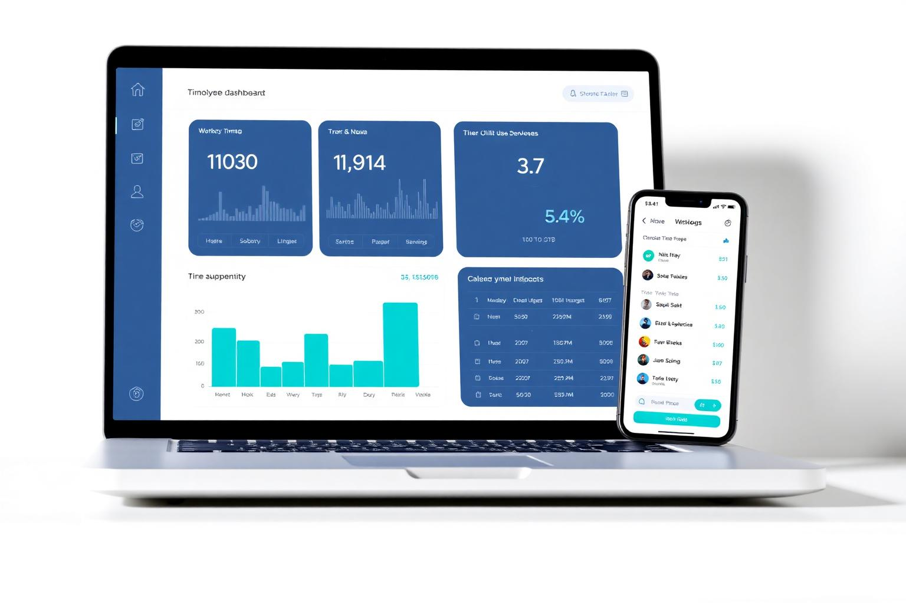
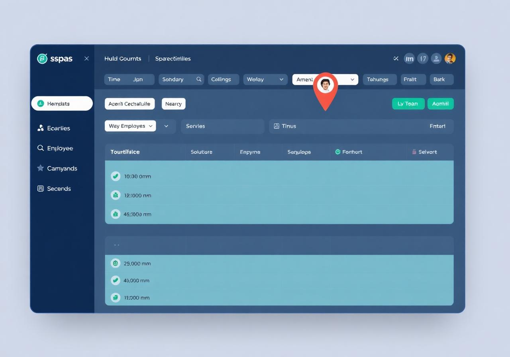

Control de presencia sencillo, legal y completo para tu empresa.
Siscentro centraliza el fichaje de tus empleados desde móvil, dispositivos físicos, WhatsApp y una potente web de administración. Todo en una sola plataforma.

Todo lo que necesitas para controlar la presencia
Una solución completa, flexible y diseñada para adaptarse al día a día de tu empresa.
Fichaje desde móvil
Tus empleados fichan en segundos desde su smartphone, en cualquier lugar.
Dispositivos físicos
Aparatos de fichaje robustos para oficinas, obras y centros de trabajo.
Fichaje por WhatsApp
La forma más sencilla de fichar: con un mensaje, sin instalar nada.
Web de administración
Gestiona trabajadores, horarios y fichajes desde un panel claro y rápido.
Localización GPS
Verifica la ubicación del fichaje cuando tu actividad lo requiera.
Sencillo para todos
Pensado tanto para trabajadores como para administradores. Sin curva de aprendizaje.
En 3 pasos, todo bajo control
Implementa Siscentro en tu empresa de forma ágil. Sin complicaciones técnicas.
El trabajador ficha
Desde móvil, WhatsApp o un dispositivo físico. Elige el método que mejor se adapte a cada equipo.
El administrador gestiona
Trabajadores, horarios, turnos y fichajes desde la plataforma web, con todo centralizado.
Visualiza y audita
Consulta cada fichaje con su información: hora, método y ubicación GPS cuando aplique.

Una plataforma centralizada para gestionar todo
Toda la información de tu empresa al alcance, organizada y fácil de consultar. Sin hojas de cálculo, sin desorden.
Gestión de trabajadores
Altas, bajas y permisos en un par de clics.
Gestión de horarios
Define turnos, jornadas y excepciones por equipo.
Consulta de fichajes
Histórico claro, exportable y siempre disponible.
Verificación GPS
Comprueba la ubicación del fichaje cuando aplique.
Diseñado para ayudar a tu empresa a cumplir con la ley
Siscentro facilita un registro de jornada ordenado, trazable y accesible. Una solución pensada para que el control horario sea una tarea sencilla y profesional.
Cumple con la normativa de control horario
Diseñado para facilitar el registro de jornada exigido por la legislación vigente.
Registro ordenado y trazable
Cada fichaje queda guardado con su fecha, hora y método, listo para auditar.
Pensado para tranquilidad de tu empresa
Una solución profesional para registrar la jornada de tus trabajadores con seguridad.
Registros claros y accesibles
Consulta y exporta los registros cuando los necesites, de forma organizada.
Impacto real en empresas como la tuya
Métricas medias observadas en clientes activos de Siscentro.
Empleados fichando de forma habitual desde el primer mes.
Agendar demo enfocadaRegistros íntegros y exportables ante Inspección de Trabajo.
Agendar demo enfocada¿Qué KPI quieres mejorar primero?
Elige el resultado que más te importa y prepararemos una demostración enfocada en ese caso concreto, con datos y flujos reales.
Empresas que ya confían en Siscentro
Equipos de distintos sectores han simplificado su control de presencia con nosotros.
“Implantamos Siscentro en dos semanas y olvidamos las hojas de Excel. El equipo ficha por móvil sin fricción y el panel nos da una visión clarísima de cada turno.”
“El fichaje por WhatsApp ha sido un antes y un después para nuestros camareros. Sin apps, sin contraseñas, sin excusas. La adopción fue inmediata.”
“Necesitábamos cumplir con el registro horario de varias clínicas a la vez. Con Siscentro centralizamos todo y las auditorías son trámite de minutos.”
Resultados medibles en cada sector
+120 operarios fichando desde obra con GPS
Sustituyeron partes en papel por fichaje móvil con verificación GPS en cada tajo.
12 locales unificados en una sola plataforma
Fichaje por WhatsApp para personal de sala y dispositivos físicos en cocinas.
8 centros gestionados por un único equipo de RRHH
Exportación directa de fichajes y trazabilidad completa para inspecciones.
Tarifas claras, sin sorpresas
Paga solo por lo que necesitas. Sin permanencia y sin costes ocultos.
Plan Móvil
por trabajador / mes
Mínimo 20 € / mes
- Fichaje desde móvil
- Fichaje por WhatsApp
- Web de administración
- Localización GPS
- Soporte estándar
Hardware
alquiler / mes
Aparato físico de fichaje
- Dispositivo de fichaje físico
- Compatible con plan móvil
- Soporte e instalación
- Mantenimiento incluido
Empresas grandes
+ de 30 trabajadores
Tarifas adaptadas a tu volumen
- Tarifas personalizadas
- Onboarding dedicado
- Soporte prioritario
- Integraciones a medida
¿Necesitas algo distinto? Hablemos.
Agenda una demostración personalizada
Te mostramos Siscentro en acción y resolvemos todas tus dudas. Sin compromiso, adaptada a tu empresa.
- Sesión de 30 minutos
- Demo en vivo de la plataforma
- Plan personalizado para tu empresa
Preguntas frecuentes
Todo lo que necesitas saber antes de empezar.